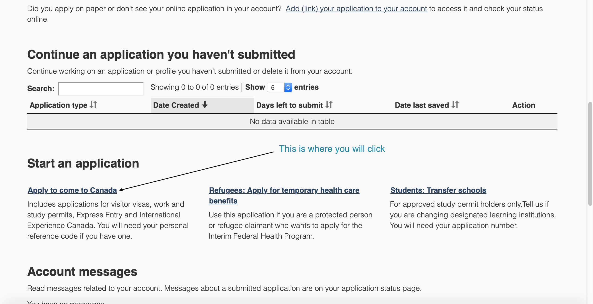
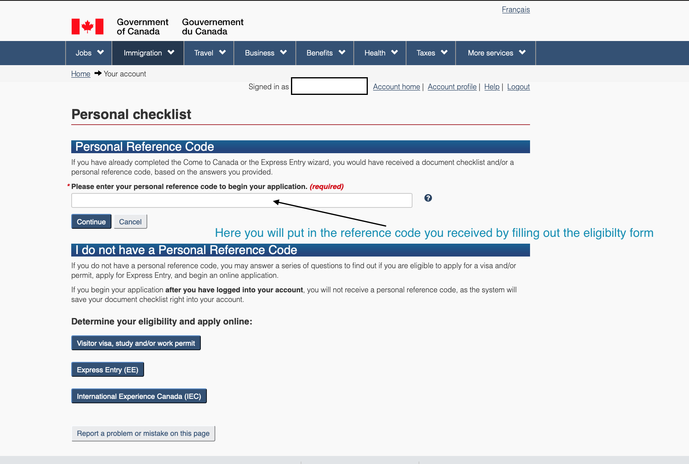
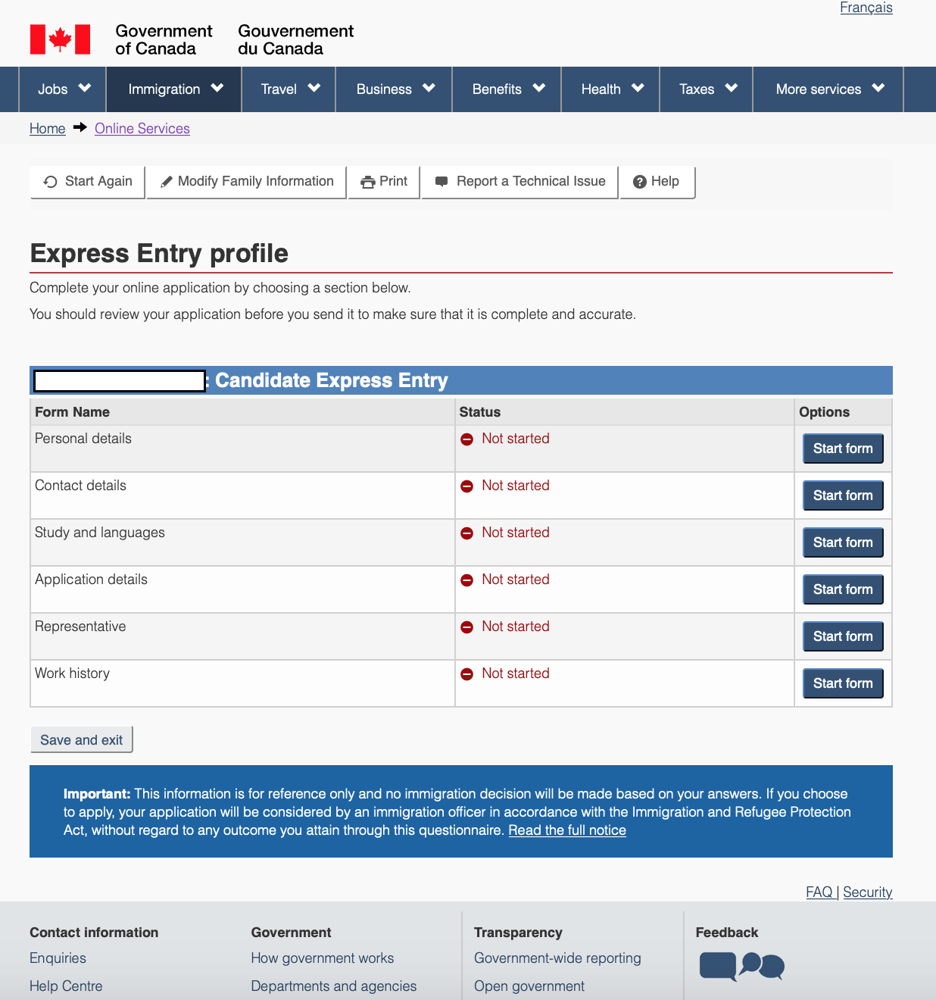

Let us advance to the second level of Canada PR
Now that you have created an account, given the IELTS and have your credentials verified, you are ready to apply.
1. Once you successfully login, you will see this page->
 All you have to do is click on 'Apply to come to Canada.'
2. On the next page, you will see the following.
The good thing is that we have already filled the eligibilty questionnaire and do not need to waste any time on it. If you have trouble finding your reference code or if it does not work, you can click on the Express Entry(EE) button you see. The bad thing is that you will have to fill in all the questions again, but the good thing is that you will know well in advance that you are eligible.
3. The real application
Welcome to the real application where you will fill the forms that will  Now that you have finally made it this far, everything from here is important and needs your full attention. Be careful and make sure you fill all the forms without errors. All the forms that you see above are necessary steps to your application for a Canada Express Entry Application.
4. After filling all the forms with your data
Now you will see that a Continue button just popped up on your screen once all the forms are marked as complete. If you are having any difficulties in filling out any forms here, please feel free to contact me here
If you are having any difficulties in filling out any forms here, please feel free to contact me here
Now as you finish filling the forms and Click on Continue, you will have to sign a few places electronically to confirm that you have provided all real data and are not lying on your application. I will suggest that you should not lie or even tweak the truth to your advantage. Please be as honest as possible as this will only help you. If they find problems in what you have claimed then it will only be harmful to you.
Now that you have filled in all the forms, and have given your consent, you will see your points that have been calculated based on your background- this includes ethnicity, work experience, education and maritial status. Special preference is given to married people as Canada believes that married people with kids will bring peace and value to the country. Your ethnicity and current nationality will not affect your candidature unless any sanctions are put on your homeland. Education is a very big criteria because, the more your education, the more points you get. This is why the education credentials that you had evaluated play a big role. The more you are closer to an equivalent Canadian degree, the more are your points. Prior work experience gives the immigration department a confidence that you have previously been working and have enough experience to find a job in Canada and will not freeload and enjoy health benefits.
Provincial nomination is one of the ways to boost your points. You can get a provincial nomination by contacting the territory directly. Check this website to get a provincial nomination from one of the territories. This however is costly and may be a waste if it does boost your points enough. Also, good thing to note is that the territory can withdraw your nomination. So, be careful where you want to get a nomination from
You will be shown your point and will be asked if you want to be a part of the lottery process. As you have taken efforts to reach upto this point, you will definitely want to put in your name in the system to get an Invitation to Apply(ITA). One you have opted into the lottery, you will have to wait till your number is picked up. You will receive a confirmation that your Express Entry profile was received. The process for getting ITA is very simple and is based only on your points. If you have more points than the cut-off, you will get your Invitation to apply. You can always see this website for the latest cut-off score. Due to high rejection of visas in the USA, people are moving up north to ensure a smooth visa-free living for themselves and their childre. So expect the cut-off to creep up. So if you are on the verge of deciding, then do so before it is too late.
Once you fill in your form, then comes the frustrating part of waiting. Hopefully, you make the cut-off and get your ITA that you were desperately waiting for. CIC usually will give out ITAs every second Tuesday. On rare occasions, it will give an ITA on consecutive Tuesdays. So pray that you make it and patiently wait.
Also ready the post ITA procedure on Page 3 to pre-plan for unforeseen delays.